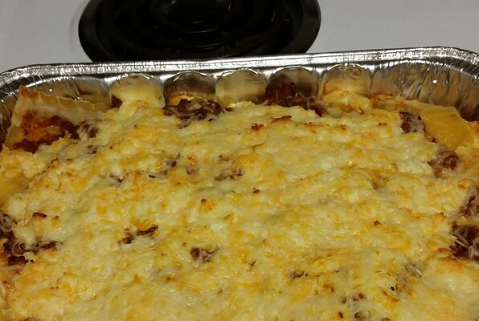

Back to index
Lasagna

Description
Les lasagnes sont à la fois des pâtes alimentaires en forme de feuilles rectangulaires,
ainsi qu'une recette de cuisine italienne à base de couches alternées de pâtes lasagnes, parmesan, mozzarella, ou ricotta, et de sauce bolognaise ou sauce béchamel, gratiné au four.
Originaires du centre-sud italien, elles sont déclinées sous de multiples variantes dans le monde.
Ingredients
- 1 (16 ounce) package lasagna noodles
- 1 pound lean ground beef
- salt and pepper to taste
- 11 (16 ounce) jar spaghetti sauce
- 1 clove garlic, minced
- ½ pound shredded mozzarella cheese
- ½ pound shredded mozzarella cheese
- 1 pint ricotta cheese
Steps
- Bring a large pot of lightly salted water to a boil. Add pasta and cook for 8 to 10 minutes or until al dente; drain
- Preheat oven to 175 degrees C. In a large skillet over medium-high heat, brow beef and season with salt and pepper ; drain.
Stir in spaghetti sauce and garlic and simmer 5 minutes
- In a medium bowl, combine mozzarella, cheddar and ricotta, stir well. In9x13 inc pan, alternate layers of noddles , meat mixture and cheese mixture until pan is filled
- Bake in preheated oven for 30 minutes, or until cheese is melted and bubbly